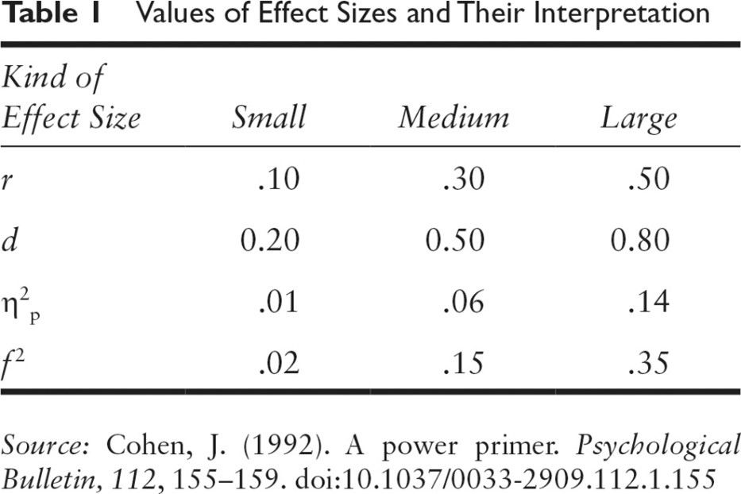
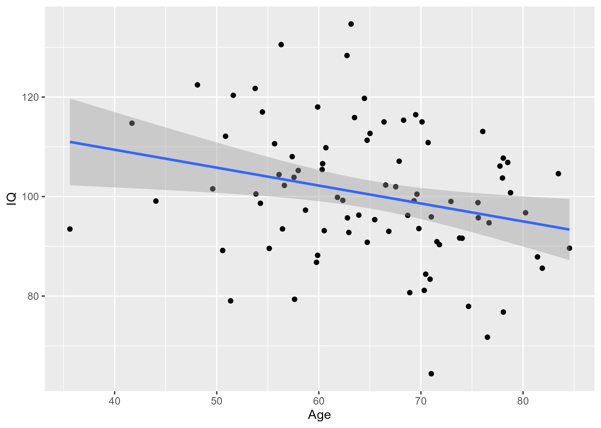

Practical #4 Correlation Statistics and Plots
1. Thinking About Association
As part of your final paper, you will be proposing an association between your dependent variable (DV) and a covariate of interest. In the last practical assignment, you developed some ‘priors’ around what the DV and covariate would look like. In this assignment, you will be asked to justify, simulate, and report the association between your DV and your covariate.
The first step is to write an introductory paragraph that reminds us what your proposed DV and covariate are, and why you believe they should be associated. You can cite papers later- first just explain how you think the two variables work together. For example, if the your DV were “feelings of stress” and your covariate were “optimism”, tell us a bit about the relationship between them from a theoretical perspective- do optimistic people tend not to perceive stressful life events the same way? Perhaps optimistic people just don’t experience the same level of physiological reaction to stressors and see the world a less threatening place? Help us understand why you think these variables ought to be related, or at least why it is possible that they are.
2. What is already known about these varaibles?
Write a paragraph or two describing what we know about your proposed DV and covariate. What direction are the proposed associations? In this section, you should cite at least 2 empirical, peer-reviewed papers that help you to estimate the expected association size, using APA format (minus hanging indents) and including the full references below the paragraph(s).
Most importantly, we need to get specific about the expect association value. In your brief literature review, please report any measure of association, which will often be a correlation (r) or beta estimate (b), along with some interpretation of the effect size involved. Effect sizes can be described by specific effect size statistics like cohen’s d or partial eta2, or they could be describe by confidence intervals.
If you cannot find any reports of correlation values in the literature, then you will have to argue from theory about your predicted effect size:

Please note that finding correlations >.30 (or < -.30) is rare in a lot of psychology (especially human research; animal studies tend to yield larger effect sizes), so you will need to justify the effect size you expect to find.
3. Power Analysis: what sample size should you use?
For this portion of the assignment, make sure that you have your code blocks set to echo = TRUE, message = FALSE, warning = FALSE. This will print the code and the result, but not excessive the messages that R sends.
Use an online calculator (link in Lecture_5 slides to my favorite one, but there are many available) to estimate the sample size needed given the estimated correlation that you derived from your literature search.
4. A picture is worth 100 words…
Simulate two columns of data to represent your DV and covariate. Use the sample size that you determined was required for adequate power.
Generate a ggplot (scatterplot) of the data with a linear line of best fit. You can format this graph in any way that you see fit. Feel free to be creative! Every element of this chart can be tweaked to your specifications. Feel free to Google how to change specific aesthetics.
Save the ggplot as a high-quality .png image (dpi = 300), and call back the high quality image for your assignment. Add a figure caption to describe the relationship that you have depicted in the chart.
Call back the image that you saved to showcase your simulated data in pictoral form!
5. Reflect
Write a closing paragraph (3-5 sentences) summarizing what it is like trying to estimate an association / correlation from the literature. What did you think about creating your first data visualization using R? Were you surprised by the number of participants required to detect your effect with 80% power? Feeling confused about any of these concepts? Is there anything that would have improved your experience doing this assignment?
Code for Practical #4
# Set up how the code chunks will print
knitr::opts_chunk$set(echo = TRUE, # Show the code
warning = FALSE, # Hide the warnings
message = FALSE) # Hide the messagesGenerate Data
# You must install packages before you can use them.
# You only needd to install once per computer.
# install.packages(c("faux","tidyverse")) # Remove leading hashtag to run this line!
# Once the packages are installed, you can load them to your current R session using the library() command
library(faux)
library(tidyverse)
# Set a consistent start point for "random" data generation
# Makes it so the output will be consistent
set.seed(123) # Can be any value.
# Generate data. Specify the number of rows, number of variables, means for the columns, sd's for the columns, and the correlation between the columns.
data <- rnorm_multi(n = 85, vars = 2, mu = c(65,100), sd = c(10,15), r = -0.3)Check out the data
## X1 X2
## 1 64.74322 90.80306
## 2 56.44198 93.49663
## 3 53.76554 121.72313
## 4 67.53304 101.96359
## 5 54.27693 98.64371
## 6 48.10980 122.44146Check the correlation
# Check the correlation between the two columns
# If you don't like it, play around with the value in set.seed until you are happy.
cor.test(data$Age,data$IQ)##
## Pearson's product-moment correlation
##
## data: data$Age and data$IQ
## t = -2.5503, df = 83, p-value = 0.0126
## alternative hypothesis: true correlation is not equal to 0
## 95 percent confidence interval:
## -0.45646873 -0.05988606
## sample estimates:
## cor
## -0.2695696Code to generate a basic scatterplot:
basic <- data %>%
ggplot(aes(x = Age, y = IQ))+
geom_point()+
geom_smooth(method = "lm")
# Save a high quality .png image
## Default size is 7 inches x 7 seven inches
ggsave("Figs/scatter_1.png",basic, dpi = 300)
# Call back the high quality image
knitr::include_graphics("Figs/scatter_1.png")
A fancier, better looking scatterplot:
a <- data %>%
ggplot(aes(x = Age, y = IQ))+
geom_point(size = 4, alpha = 0.5, colour = "#800020")+
geom_smooth(method = "lm", colour="#800020", fill="#800020")+
theme_classic()+
theme(plot.title = element_text(hjust=0.5))+
labs(
x = "Age of Participants",
y = "IQ Score",
title = "Relationship Between Age and IQ"
)+
xlim(30,90)+
ylim(60,140)
# Save the chart once you're happy with it as a high quality .png image
ggsave("JLB_graph.png",a,height=4,width=4,dpi = 300)
# Add in the high quality image saved above
knitr::include_graphics("JLB_graph.png")Figure 4.1: ADD A FIGURE CAPTION HERE